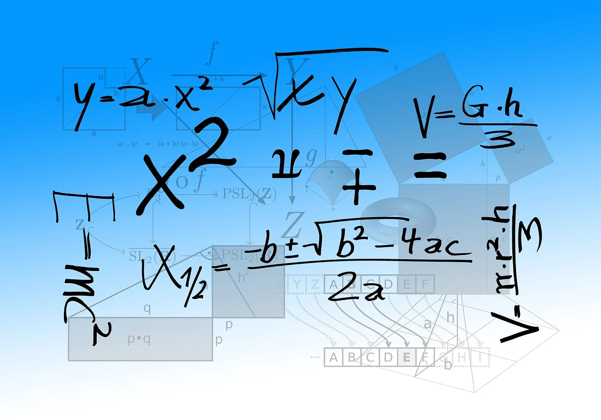

Introduction
C# is an object orientated programming language, which uses the .Net Framework for development
.Net Framework

.NET is a free, cross-platform, open source developer platform that allows you to use
- Multiple languages
- Editors
- Libraries
To build
- Games
- Web
- Mobile
- Desktop
- Servers
- Windows Tools
Variables
Define variables
To define a variable in C# you have to write the type of the variable, then the name.
After that you write a equals symbol and the value. Last but not least a semicolon
type name = value;
For example
string name = "Jonas";
int number = 1;
Selection
Selections means to create a statement. When the statement is true, then a action executes You can use if-statements
if(statement)
{ // Action what should execute
}
You can also execute a specified action if the condition isn't true. The Keyword is else
if(statement)
{ // Action what should execute
}
else
{ // Action what should execute when the statement is false
}
You can also specify it with another statement. The Keyword is else if
if(statement)
{ // Action what should execute
}
else if(statement)
{ // Action what should execute when the statement is false and the second statement is true
}
You can also use switch. A switch checks all cases. The value should be static in the interval of the usage.
After each case is a break.
switch(value)
{ case statement: // first case of the value compared with the statement // Action by statement break;
case statement: // second case of the value compared with the statement // Action by statement break;
}
A switch can also take a default. It is activated, when no statement is true.
switch(value)
{ case statement: // first case of the value compared with the statement // Action by statement break;
case statement: // second case of the value compared with the statement // Action by statement break;
default: // Action if no statement is true break;
}
Operators
Arithmetic Operands
- +
- Additions operator
- -
- Subtraction operator
- *
- Multiplication operator
- /
- Division operator
- %
- Modulo operator
- The modulo operator returns the rest of a division
- 6 % 2 = 0
- 6 / 2 = 3 and nothing rest
- 6 % 4 = 2
- 6 / 4 = 1 and 2 rest
int number = 6
int additionOperator = number + 2; // Output: 8
int subtractionOperator = number - 2; // Output: 4
int multiplicationOperator = number * 2; // Output: 12
int dividedOperator = number / 2; // Output: 12
int moduloOperator = number % 2; // Output: 0
Assignment operator
An assignment operator calculates the expression on the right side and copy it into the variable on the left side. The operator symbol is =
double number = 3.2;
Special assignment operator
C# also have special assignment operators. The first one is when you use ++ oder --. When you write ++ or -- after a variable, it returns the value + 1 after a action. When you write ++ or -- before
int number = 1;
int secondNumber = 1 + (number++); // Output: Second number is 2 and number is 2
int thirdNumber = 1 + (++number); // Output: Second number is 3 and number is 2
When you will add or subtract an individual number, you can use the arithmetic operators with an equals symbol.
int a = 0;
a += 2 // a is 2
a = 0;
a = a + 2 // the same output
Boolean operators
- ||
- or gate
- when one of the statements are true. Then it returns true. Otherwise, it returns false.
- &&
- and gate
- when the right statement and left statement are true. Then it returns true. Otherwise, it returns false.
- !
- not gate
- statement switch from true to false
<- smaller then
- The symbol checks if the left value is smaller than the right. If the left value is smaller, it returns true. Otherwise, it returns false. When you add an equals, it also checks if it is the same value.
>- bigger then
- The symbol checks if the left value is bigger than the right. if the left value is bigger, it returns true. Otherwise, it returns false. When you add an equals, it also checks if it is the same value.
A statement can be saved with a variable. The type is bool
bool isBigger = 2 > 0; // Output: true
bool isBigger = 2 < 0; // Output: false
bool isEqualsOrBigger = 2 >= 2 // Output: true
bool isSmaller = 2 < 5 // Output: true
bool isSmaller = 2 < 1 // Output: false
bool isSmaller = 2 <= 2 // Output: true
bool orGate = true || false // Output: true
bool andGate = true || true // Output: true
bool notGate = !false // Output: true
| left side | right side | output |
|---|---|---|
| 0 | 0 | 0 |
| 0 | 1 | 1 |
| 1 | 0 | 1 |
| 1 | 1 | 1 |
| left side | right side | output |
|---|---|---|
| 0 | 0 | 0 |
| 0 | 1 | 0 |
| 1 | 0 | 0 |
| 1 | 1 | 1 |
| side | output |
|---|---|
| 0 | 1 |
| 1 | 0 |
Loops
A loop is a code block, which executes as long as the statement is true. There are different types of loops. You can use loops to avoid code duplicates.
- for
- It is a counter loop
- It runs at least 0 times
- while
- It is a head controlled loop
- It runs at least 0 times
- do-while
- It is a foot controlled loop
- It runs at least 1 time
- foreach
- Selects each element in a sequence
- It runs at least the count of elements in the sequence
The for loop has a counter. You can define that with a data type.
for((type of the counter) (name of the counter); (statement for the loop);(operation with the counter))
{
// The code in the loop
}
Here is an example of a for loop
for(int i; i < 10;i++)
{
Console.WriteLine($"The number is {i}");
}
The
while(statement)
{
// The code in the loop
}
A while loop is for example
int number = 312;
while(number > 9)
{
number /= 10;
}
If the loop is finished, the variable number will have 3. Because it is the last digit.
The do-while runs at least one time, because the check if it should end is at the end of the loop. It is almost the same as while.
do
{
// The code in the loop
}
while(statement);
The foreach loop iterates through a sequence of elements
foreach(type singleElement in sequence)
{
// Code in the code-block
}
For example
string[] foodArray = { "Pizza", "Pasta", "Burger" };
foreach(string food in foodArray)
{
Console.WriteLine(food);
}
Elementary data types
What are data types
A particular kind of data item, as defined by the values it can take, the programming language used, or the operations that can be performed on it. And it is already defined.
Here is the list of elementary data types.
| Data Type | Defined | Alias |
|---|---|---|
| Integer | Size of 4 Bytes and can take numbers inside the range | int |
| Double | Floating-point number with double precision | double |
| Character | Single Unicode character | char |
| Boolean | Represents true or false | bool |
| String | Sequence of characters | string |
| Byte | Unsigned 8-bit integer | byte |
| Short | Signed 16-bit integer | short |
| Long | Signed 64-bit integer | long |
| Float | Floating-point number with single precision | float |
| Unsigned Integer | Unsigned 32-bit integer | uint |
| Unsigned Long | Unsigned 64-bit integer | ulong |
| Unsigned Short | Unsigned 16-bit integer | ushort |
| Signed Byte | Signed 8-bit integer | sbyte |
And you can cast variables to another type. You cannot cast a higher number to a lower number. You can also cast characters, to numbers and reversed.
The values of the characters are in the ascii table and if it is higher than 1 Byte, its number is in the unicode symbols. Here is an example.
int numberAsInteger = 97;
long numberAsLong = (long)numberAsInteger; // numberAsLong is 97
short numberAsShort = (short)numberAsInteger; // numberAsShort throw an error
char letter = (char)numberAsInteger; // letter is 'a'
Arrays
What are arrays
An array is a group of similar elements or data items of the same type collected at contiguous memory locations. In simple words, we can say that in computer programming, arrays are generally used to organize the same type of data.